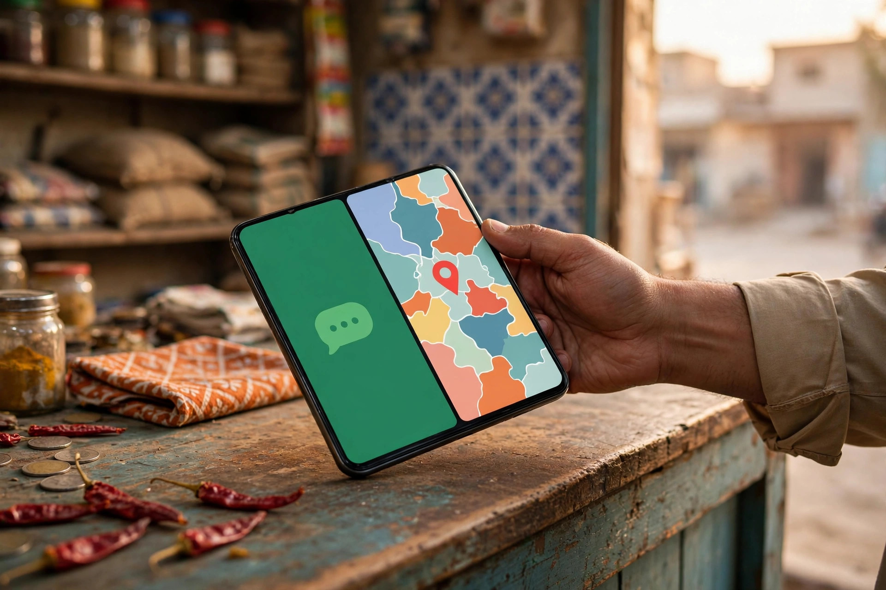
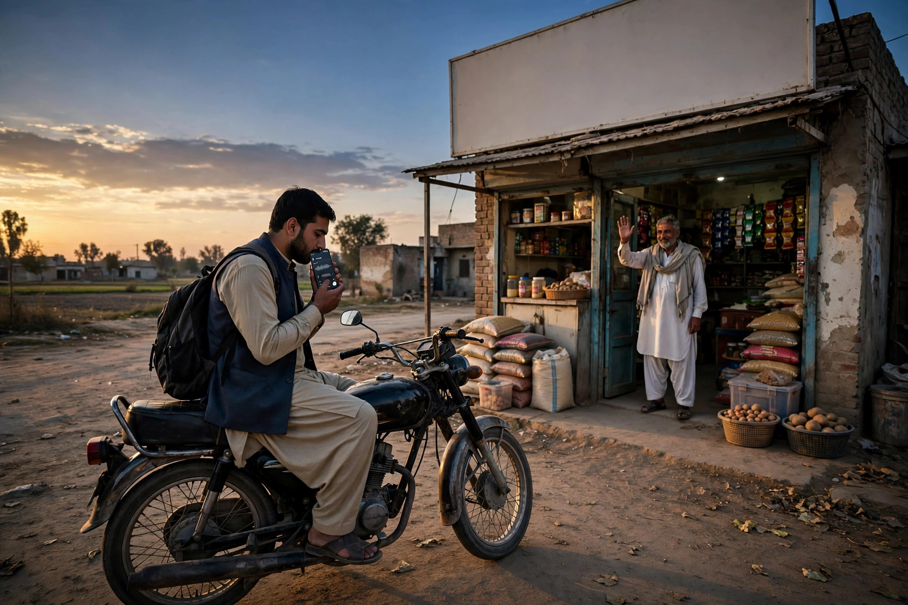

Talk to business owners in Chobara and a pattern appears quickly. Sales conversations, photo exchanges, voice notes and delivery coordination all happen on WhatsApp. Yet when those same owners need a new supplier or a service for their own family, they open Google. Both habits are reasonable. The mistake is expecting one tool to do the whole job.
Think of it as two stages. Google is your discovery stage, where strangers find you. WhatsApp is your conversation stage, where enquiries become orders. This article shows how to connect them cleanly. Local support is outlined on our SEO services for Chobara page. Zaheer Seo Expert is based in Layyah and serves Chobara businesses from there. There is no office in Chobara, and setup help is provided online and by phone, so distance is not a barrier.
Give Each Tool One Clear Job
WhatsApp cannot be searched by a stranger who does not have your number. No one types a trade into WhatsApp hoping to discover shops in Chobara. That is why a business that only shares a WhatsApp number in closed groups stays limited to people already connected to it. Google solves the discovery problem through your Business Profile and website, which anyone can find.
Google, in turn, is not where a detailed negotiation belongs. A farmer will not type ten questions into a review box. Once he has found you and tapped call or message, the natural place for photos of a fault, a field condition or a required item is WhatsApp. Planning for that handover, rather than fighting it, is the practical approach for this market.
Setting Up the Connection Step by Step
Start with consistency. Use one business number for calls and WhatsApp where possible, and show that same number on your Google profile, website and Facebook page. A customer who finds one number on Google and a different one on Facebook hesitates, unsure which is current. One number, everywhere, removes that doubt.
Next, make the path short:
- On your website: place a clear WhatsApp contact button or link on service and contact pages, so a reader can move from reading to messaging in one tap.
- On your Google profile: keep the phone number correct and, where the profile offers messaging or a website link, point visitors toward the page that carries your WhatsApp option.
- In the shop: a small printed notice with your number and a scan code helps walk-in customers save the contact for later orders.
Complete your WhatsApp business profile as carefully as your Google one: correct business name, location in Chobara, hours and a short description of what you sell or do. A blank profile with a personal photo creates doubt at exactly the moment a new customer is deciding whether you are genuine.
Handling Enquiries So They Become Orders
Speed and clarity win on WhatsApp, but only if the system is manageable for a small team. Set a greeting message that confirms the business name, states opening hours and invites the customer to describe what they need. Save quick replies for the questions you answer every week, such as location directions, whether a common service is offered, or how delivery to nearby villages works if you provide it.
Use the catalogue feature where it suits your trade, showing main product groups or services with clear photos. Do not load it with prices that change daily unless you will genuinely maintain them. A stale price shown in writing creates more argument than no price at all, and the customer can always ask for the current rate inside the chat. This balance is part of sensible local SEO and profile work: accurate public information, flexible private conversation.

Closing the Loop: From Chat Back to Google
The connection also runs in the other direction. A customer who had a good WhatsApp experience is exactly the person to invite, politely and once, to leave a Google review using your review link. That review then helps the next stranger on Google trust you faster. In this way each completed conversation quietly strengthens your discovery stage.
Share your website link in chats when a customer asks a detailed question your pages already answer, such as your full service list or location directions. It saves typing the same explanation repeatedly and introduces the customer to everything else you offer. Our article SEO for Chobara businesses explains how the website, profile and reviews reinforce each other in this cycle.
Mistakes That Break the System
The most common mistake is using a personal WhatsApp with no business profile, no hours and a number that changes when a SIM changes. Every change breaks the chain: old Google listings, saved contacts and printed material all point to a dead number. Treat the business number as a permanent asset, like the shop sign.
Other problems include broadcasting promotional messages to people who never agreed to receive them, which gets numbers reported and blocked, and ignoring enquiries that arrive outside shop hours with no greeting to acknowledge them. A simple automatic greeting solves the second problem honestly by setting expectations about when you will reply.

A Simple Weekly Routine
None of this needs daily attention. Once a week, check that your Google hours are still right, read any new reviews and reply, glance at which WhatsApp questions repeated most, and add a quick reply or website clarification if the same confusion keeps appearing. That small loop keeps both tools accurate and steadily turns searches into conversations and conversations into returning customers for your Chobara business.
Frequently Asked Questions
Can WhatsApp replace a Google profile for a Chobara business?
No. WhatsApp is for conversations with people who already have your number. Google is how new customers discover you. Use Google for discovery and WhatsApp for the discussion that follows.
Should the WhatsApp number and Google number be the same?
Using the same answered business number in both places is simplest and avoids confusion. Keep that number consistent on your website and Facebook page as well.
How do I avoid WhatsApp spam and time wasters?
Use a clear profile description, a catalogue or price guidance where suitable, and quick replies for common questions. A greeting message that states services and hours filters casual messages politely.
Who helps Chobara businesses set this up?
Zaheer Seo Expert is based in Layyah and supports Chobara businesses online and by phone. There is no office in Chobara, and no visit is needed to set up Google and WhatsApp correctly.
Want More Customers From Google?
Call 0327 7350830 or email seozaheer14@gmail.com. Zaheer Seo Expert, Layyah - Rajan Shah Road, Rana Nagar, Chak 116 TDA, Pakistan. Open 24 hours.
Get Your SEO Strategy →